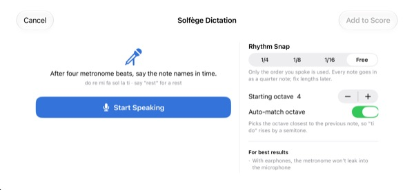
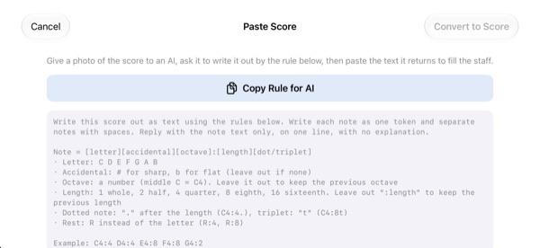

Stop counting in your head.
Hear it.
Copy the two bars that trip you up onto the staff and press play. After a one-bar count-in, StaffSinger plays them in time with the metronome, exact rhythm and pitch.
Every feature is free. For iPhone and iPad.

Write a few notes and listen
Press and hold the staff, slide up or down to change the pitch, and let go to drop the note. Press play for a one-bar count-in and playback. Turn your volume up, it makes sound.
Lost count halfway through the bar again?
A dotted eighth, then a sixteenth, then a triplet right after it, and tapping it out on your knee falls apart. Often there's no piano nearby either, like the night before rehearsal. Copy those two bars into StaffSinger and it plays them back exactly as written.
Hear the exact rhythm and pitch
After a one-bar count-in, the music plays to the metronome click and the note that's sounding lights up in orange. Set the tempo anywhere from 40 to 200 BPM and pick 4/4, 3/4, 2/4, 6/8, 2/2 or 3/8.
Stack notes on the same beat and they ring together as a chord, and write in up to three voices. Treble, alto and bass clefs and key signatures are all there.

Sing the note names, get notes
After four metronome clicks, say do re mi out loud on the beat and they land on the staff. Speak in time and the rhythm is captured too, in quarters, eighths or sixteenths. Say rest for a rest.
Say the names in English. Speech is recognized on your device and never stored.

Hand the photo to an AI, paste the result
Tap Copy Rule for AI, give it to an AI along with a photo of your score, and paste back what it writes. The staff fills in. The format is in the table below.
You can also snap the printed page and keep it on screen while you copy it out by hand.

Three steps to start
- 1
Pick the tricky bars
The app opens on an empty two-bar staff.
- 2
Write the notes
Press the staff or play the piano keys.
- 3
Press play
A count-in, then playback with the metronome.
Text format for pasting
- C4:4
- C in octave 4, quarter note (middle C is C4)
- D:8
- Leave out the octave and the previous one carries over
- F#4:8 · Bb4:4
- # for sharp, b for flat
- E4
- Leave out :length and the previous length carries over
- :1 · :2 · :4 · :8 · :16
- whole, half, quarter, eighth, sixteenth
- C4:4.
- dotted note
- C4:8t
- triplet
- R:4 · R:8
- rests
Copy Rule for AI in the app copies these exact instructions. Separate notes with spaces.
Everything is free
Free
- Staff input and a two-octave piano keyboard
- Playback with count-in and metronome
- Chords and three voices
- Key signatures and three clefs
- Solfège dictation
- Paste as text and reference photos
Support the developer
- Send a small tip from Settings
- Tips don't unlock anything extra
Not a subscription. Each tip is a one-time payment.
No ads, and no account needed.
Questions
How do I add notes?
Pick a note value in the toolbar first, then press the staff at the pitch you want. You hear the note while you hold, and it's added when you let go. Tap the keyboard button to enter notes on a two-octave piano instead.
How do I make a chord?
Turn on the Chord button in the toolbar and add notes. They stack on the selected note and sound together.
How do I fix a note?
Drag a note up or down to change its pitch, or sideways to move it to another beat. With a note selected, the ♯ and ♭ buttons move it a half step and the 8va buttons move it an octave.
Where do I change the tempo or time signature?
In Settings, along with the clef and key signature. You can also turn the metronome and count-in on or off there.
I don't hear anything.
Check Silent Mode and your media volume. If only the metronome is missing, make sure Metronome is on under Playback Aids in Settings.
Dictation keeps getting notes wrong.
Use earphones so the metronome doesn't bleed into the mic, and say one clear note name per beat. If a note comes out wrong, drag it to fix it.
Why does it need the camera?
Only to take a reference photo of your sheet music to show on screen. Photos never leave your device, and you can pick one from your library without allowing the camera.
Which devices does it run on?
iPhone and iPad with iOS 17 or later. It's designed for landscape.
Is my music or voice sent anywhere?
No. Your scores, photos and voice stay on your device, and everything works offline. Only anonymous usage statistics and crash reports go to iCloud, to help fix the app.
How do I get in touch?
Email leeo@kakao.com. Replies usually come within 2 to 3 business days. Bug reports and feature ideas are also welcome as issues on GitHub at M1zz/StaffSinger.
Questions or feedback? Write to leeo@kakao.com.